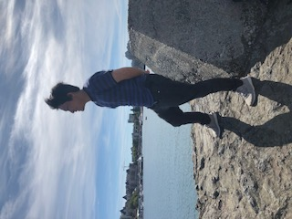

Hijiri's SCC WEB120 Portal
Welcome
Welcome to my page! My name is Hijiri Maruo. I'm originally from Japan. After I had greaduated high school, I worked in Japan about 6 years. Meanwhile, I also wanted to learn English and Computer Science. Even though I've been living in Seattle over two years, I've just started learning progamming because I stuck ESL classes long time. I would like to work in Seattle in the future, but I have not decided which part am I interested in working progamming companies becuase I just have known HTML progamming a few months ago. However, I like to learn HTML because of HTML that web pages are interesting to look at. Anyway, I'll try my best to study HTML and CSS this quarter!
